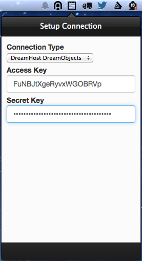
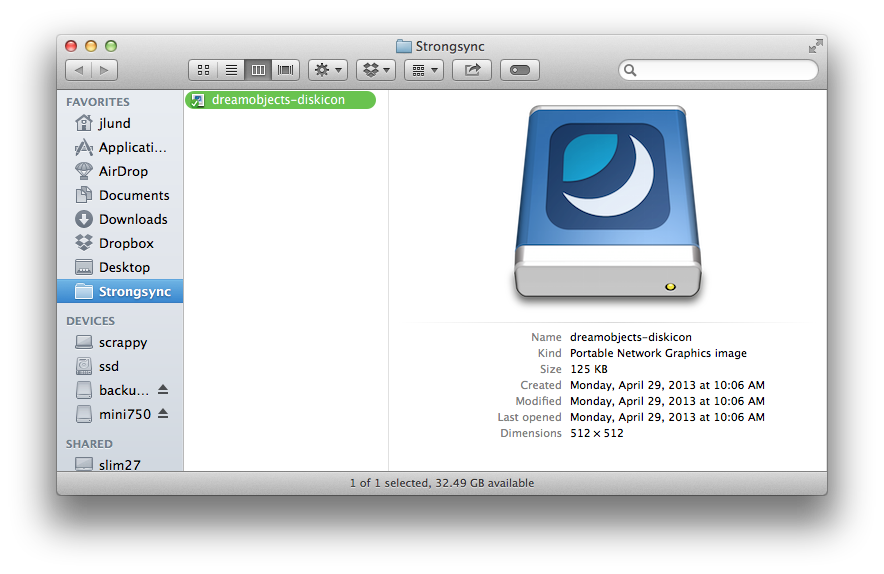
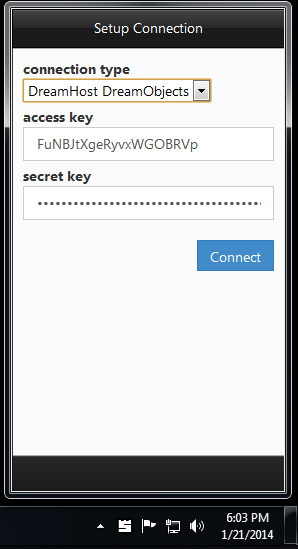
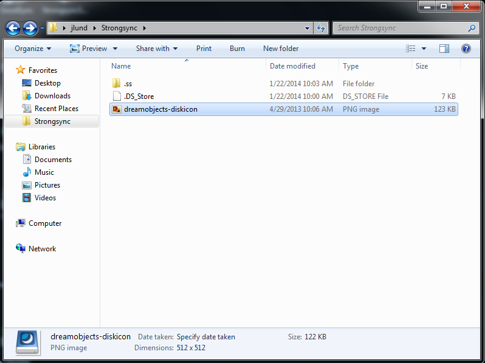

How to Use Strongsync with DreamObjects
Important
The instructions in this wiki are for an older version of Strongsync. Strongsync has been renamed ExpanDrive, click this link to go to our tutorial on how to use ExpanDrive with DreamObjects.
Strongsync is an app that provides Dropbox-like sync and backup functionality to DreamObjects. Sync data across computers, including Windows and Mac, while staying in control of your data.
Mac version
Download, install and launch Strongsync.
Enter your access key and secret key from the DreamObjects Panel.
Strongsync will automatically create a bucket in DreamObjects and a Strongsync folder on your computer.
Any file in the Strongsync folder will be available across all devices running Strongsync
Windows version
Download, install and launch Strongsync.
Enter your access key and secret key from the DreamObjects Panel.
Strongsync will automatically create a bucket in DreamObjects and a Strongsync folder on your computer.
Any file in the Strongsync folder will be available across all devices running Strongsync